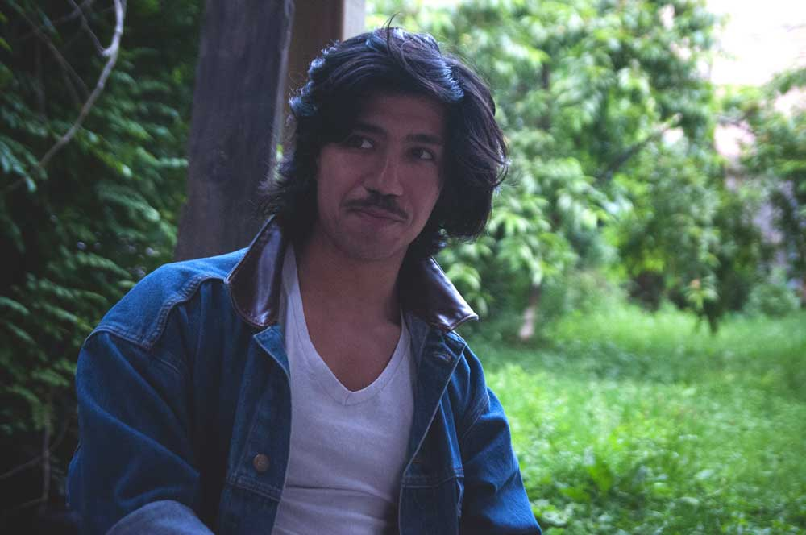

About

Dan Rico is a Chicago based songwriter, producer, singer, and multi-instrumentalist. He crafts his own brand of post-modern rock and roll/ pop plucking from a bouquet of recognizable soundbites— the croon of Elvis Presley, prince’s sensual sensitivity, the lo-fi thrust of the Buzzcocks. Growing up playing in and recording punk bands, all the while absorbing soul, and jazz acts in his home town of Chicago, Dan decided to strike out on his own in 2015 after noticing how homogenous the rock show scene seemed to be be night after night.
Dan Rico proffers to make “MUSIC FOR ALL PEOPLE” with his well stocked arsenal of aural platitudes ranging from 50’s pop to contemporary R and B. A gifted vocalist and guitar player (he also plays bass, keyboards, drums, and does all the production on his recordings), Dan brings a realness and rawness to his live performances in an era of laptop-peddlers and reverbed-out garage proliferators. “DREAMY," his newest release, is a must-hear assemblage of catchy tunes with depth and ambition. With a little bit of doo-wop vocal arrangement, snarly rock guitars, danceable rhythm, electronic soundscapes, and catchy melodies, the music of Dan Rico just might be a shining outpost in the shadowy future of rock music.